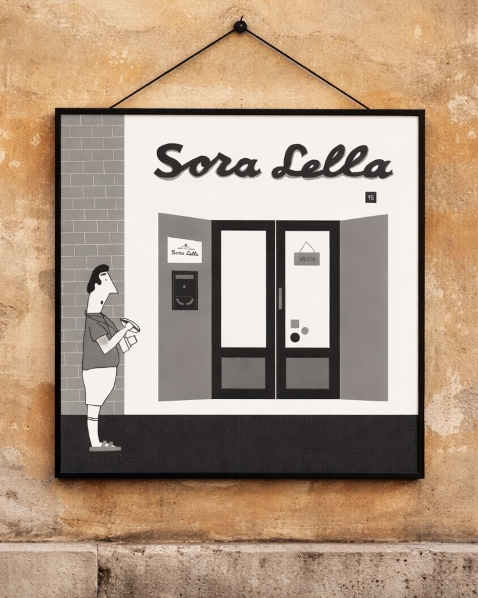
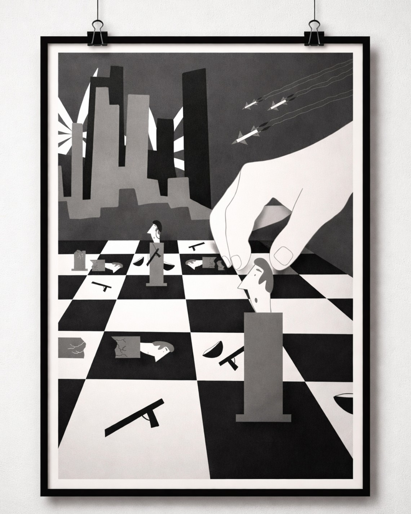
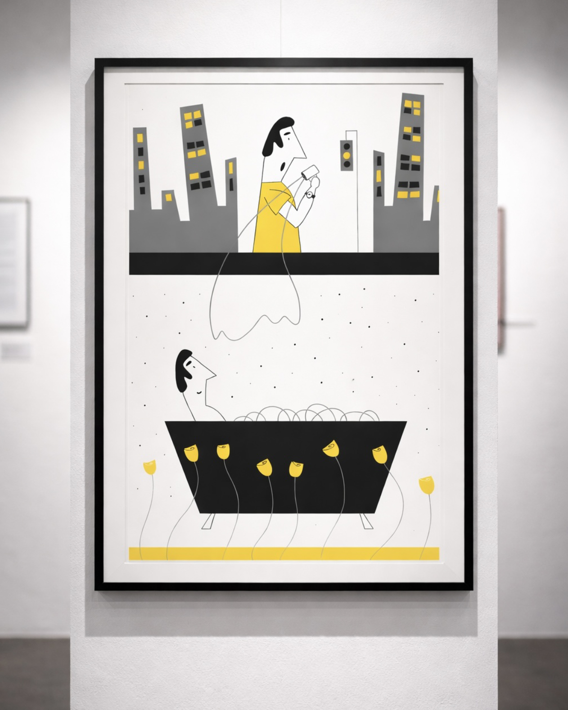
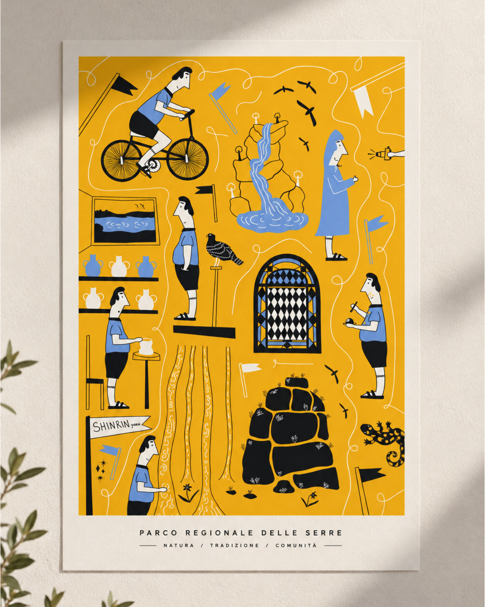
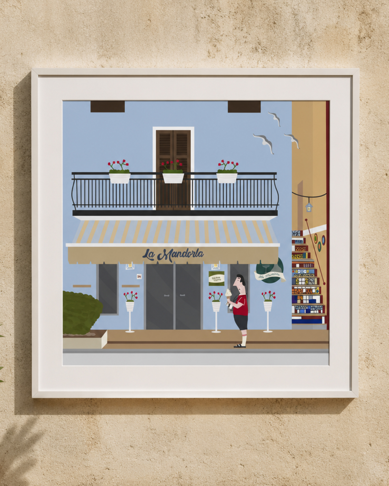
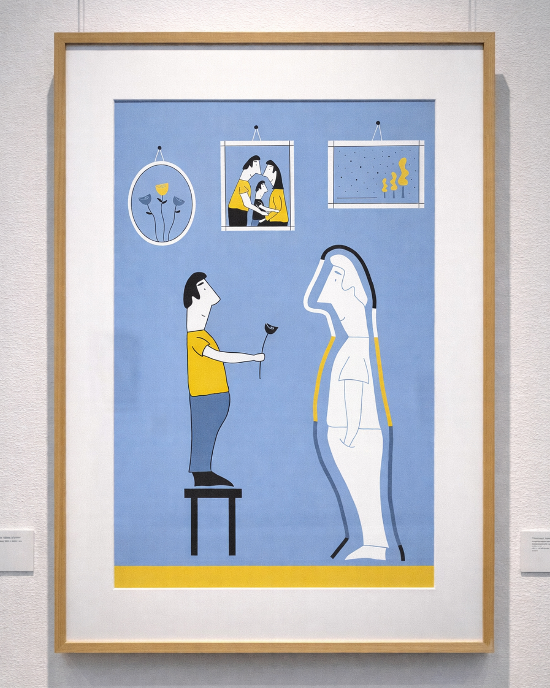

Osservare
Raccolgo spunti dalla quotidianità, dalla natura, dalle esperienze e dalle relazioni, individuando il nucleo dell'idea.
Immagini per osservare, interpretare e raccontare.
L'illustrazione è per me uno spazio di ricerca e interpretazione: un modo per trasformare idee, sensazioni e osservazioni in immagini. Parto spesso da elementi della quotidianità, relazioni, simboli e ricordi, cercando una sintesi visiva capace di comunicare con immediatezza e lasciare spazio a una lettura personale.
02 — IL MIO APPROCCIO
Ogni lavoro nasce da una domanda, un'immagine mentale o un dettaglio che cattura la mia attenzione. Attraverso schizzi, raccolta di riferimenti e sperimentazione, cerco il modo più efficace per tradurre quell'intuizione in un linguaggio visivo essenziale.
Lavoro sulla relazione tra forme, colori e composizione, cercando equilibrio senza rinunciare all'espressività. Mi interessa costruire immagini riconoscibili e sintetiche, capaci di suggerire significati senza dover spiegare tutto.
03 — IL PROCESSO
Raccolgo spunti dalla quotidianità, dalla natura, dalle esperienze e dalle relazioni, individuando il nucleo dell'idea.
Esploro riferimenti, schizzi, forme e palette cromatiche per trovare una direzione coerente con ciò che voglio comunicare.
Definisco la composizione e i dettagli, cercando un equilibrio tra chiarezza, carattere espressivo e identità visiva.
04 — UNA SELEZIONE
Una selezione di lavori che esplorano soggetti, linguaggi e possibilità espressive differenti.

01Sora Lella · Ristorante storico di Roma

02DesinaFestival · Mossa Forzata

03RadiciFestival · Sotto la superficie, il tempo respira

04Parco Regionale delle Serre · natura tradizione comunità

03La Mandorla · Gelateria nel cuore della Calabria

04InchiostroFestival · Tra radici e possibilità
Scorri per esplorare i lavori
05 — CONTATTI
Per collaborazioni, progetti di illustrazione e comunicazione visiva, scrivimi: sarò felice di parlarne.
claudia.attenni.lavoro@gmail.com ↗